Sorry, under construction and Japanese only,Yet...
インバータを使った高効率LED照明装置(改版2 2011-11-28)
きっかけ
東日本大震災で、当日全面停電してしまってジャンク箱から引っ張り出したAMラジオと
辛うじてつながってる携帯電話経由のTwitterだけで心細く過ごしていたのを教訓に、
計画停電が云々された時点で手持ちであった白色LEDと抵抗、単四型エネループ四本で
間に合わせの照明を作って、計画停電となったらラジオつけて細々と読書して時間つぶししておりました。
そうなると人間欲が出てくるもので、もう少し明るい照明が欲しいな…となりました。
そんなおり、秋月電子通商のWEBページを見ると、放熱器に付けられた1Wの白色LEDやら、
1.5Aまで流せる3.3V固定のインバータICとかあるよねぇ
…これはやるしかないか
と一念発起したのが確か2011年の6月。
その後、部品を逐次備蓄したりだなんだ（貧乏なのさ）で結局半年近く計画を寝かしていましたが、機が熟した（？）ので、１０月末から
とりかかったのでした。
注意
この工作は、スイッチング電源回路や表面実装部品に慣れてない人がやると非常に難しいと思います。
普通の人？は3.3V吐き出す出来合いのD/Dコンバータモジュールと抵抗器を組み合わせて、効率が低くても気軽にできる道を選ぶべきです。
もくじ
・回路
・工作
1.まえがき
2.基板についての基本的考え方
3.製作
IC基板
メイン基板
・効率測定(28 Nov,2011)
電子工作系もくじへ
全体目次へ
回路
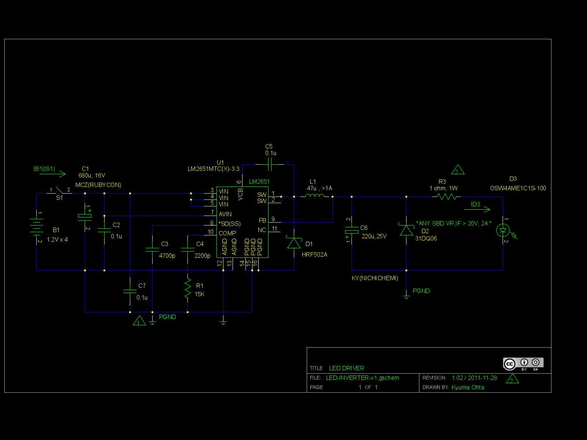
インバータ回路図(v1.01a 2011-11-17) CC-BY-SA表示追加
gEDA形式の回路図データ(gzip圧縮)
このアイコン(CC-BY-SA表示)
 も必要です
も必要です
LM2651MTC-3.3と言う、最高97%の効率を実現できるスイッチング式レギュレータを使って、
同じくVF=3.3VのパワーLED(OPTOSUPPLY社製)を駆動しています。
回路定数などは、メーカのデータシートに準拠しています。
電池で供給された4.8Vの電力は、レギュレータを通じて3.3V,300mA前後に変換されます。
この時、普通の三端子レギュレータのように電圧の差がそのまま熱になる(約66%しか使えない）のではなく、
スイッチング方式で変換されるので非常に高い効率の電力変換が行われています。(97%は無理でも85%以上にはしたい…）
(以下、あとでかく)
工作
1.まえがき
LM2651はTSSOPと言う非常に小さくて、ピン間隔が狭い(0.65mm)ICです。しかも、電力ICなので発熱が予想される
…さて、どうしようか。と言う所から始まりました。
常道ならばプリント基板を作るべきなのだが、しかし、そんな金など何処にもない。
秋月に寄った後、部品屋を眺めていたら、変換基板と一緒に銅箔テープ(サンハヤト
T-30C)が売られていました。何たる神の啓示＼(^o^)／
2.基板についての基本的考え方
・変換基板と2.54ピッチの万能基板の組み合わせで作る。
・ICやその周辺につけないといけないSBDは表面実装品でなおかつ変換基板上につける。
・ICの熱的問題軽減と過渡的・電力的問題解決のためにのために、変換基板上に銅箔で放熱を兼ねたグランドパターンなどを構築する（！）
・ICと銅箔の間は熱伝導両面テープで熱的に結合させる
・その他の部品は基本的に万能基板につけるが、パターンなど気をつける。又、ベタアースを銅箔テープで構築する
・ベタアースと変換基板上のグランドは結合する。但し、ループを形成しないように気をつける
・ケミコンは、マザーボードなどで使われる長寿命・低ESRの物を意図的に使う
3.製作
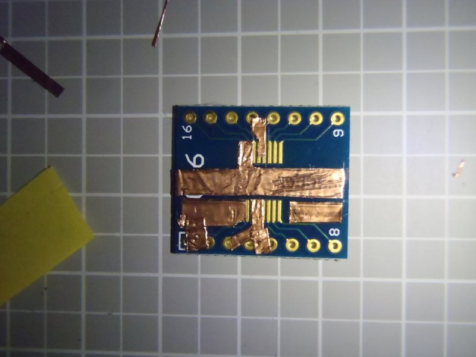
まず、変換基板（ダイセン電子工業 D016）に銅箔テープを切り貼りしていきます。
変換基板は、SSOPのパターンのみが一面に描かれてるものを使って下さい。
他のICのパターンが同じ面にあるものは使えません。(例：秋月で売ってる変換基板とか）。
基本的には、
・PGND面は広く取る
・AGNDも広くとるが、現状ではPGNDと接続しない
・PIN,SWについても可能な限り広く取る。
・変換基板のパターンは細すぎて電力的にも誘導成分を持つ意味でもよろしくないので気をつける
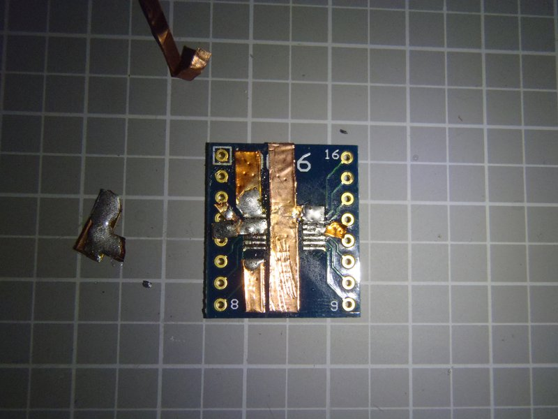
次に、変換基板のパターンと銅箔をハンダで接続し、同時に銅箔上でICの足が乗る所に予備ハンダします。ICのパッケージが乗る所はなるべくハンダ付けしないこと。
ここまで終わったら、テスターの導通チェックモードを使って、各ピン（これは、変換基板上のスルーホールに出ている）の短絡や断線を調べます。
ポイントは、
・ICのデータシートで違う名前の足が短絡してないこと
・ICのデータシートで同じ名前の足が導通していること
・PGNDパターンを複数の銅箔で作った場合は、銅箔の間をハンダ付けで接続すること
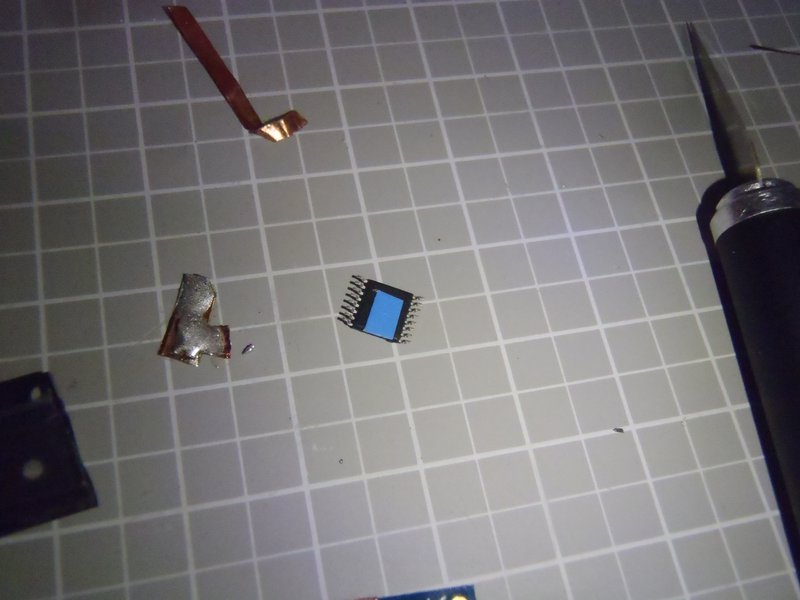
ICをはんだ付けする前に、ICの裏側に熱伝導性両面テープを小さく切って貼ります。
これは、ソフマップなどのPC自作コーナーで売られてるCPUとCPUクーラーの間に貼る「熱伝導両面テープ」などの商品名で売られてます。
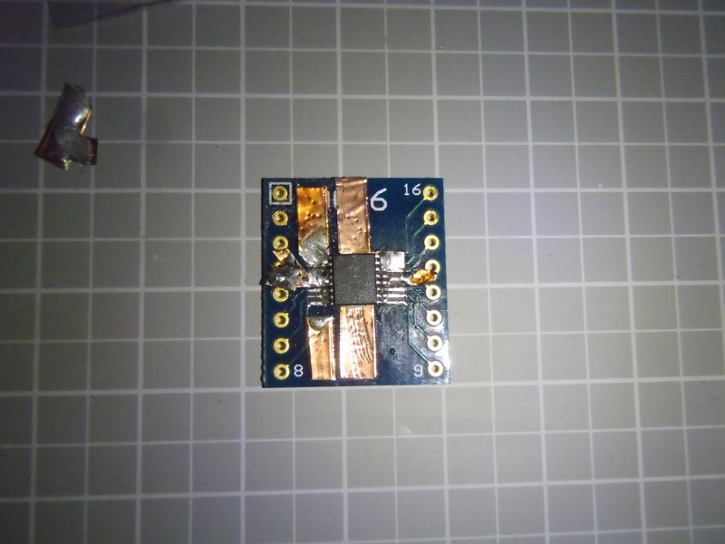
ICをハンダ付けします。ハンダ付けする前に、ICの裏側に貼った両面テープの保護テープを剥がしましょう。
その上で、変換基板の上にICをおいたら上から軽く押さえつけて、テープとICと銅箔を密着させること。
又、ハンダ付けした後で、再度テスターで短絡チェックなどを行うこと。
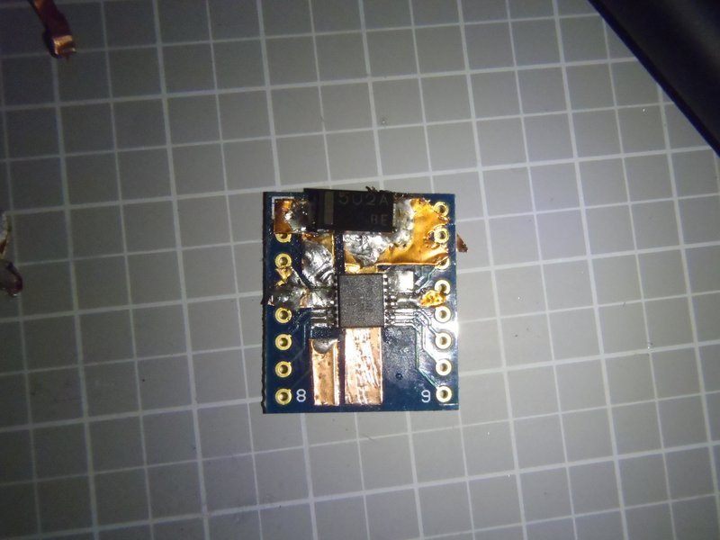
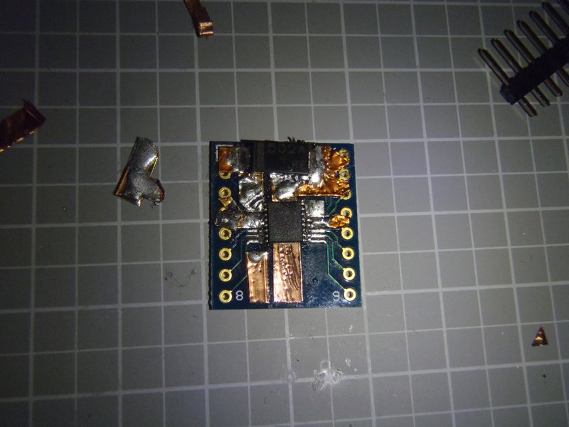
SBD(HR502A)をSWとPGNDの間にハンダ付けします。
なるべく電気的な距離を短くすべきとデータシートで指摘されてるので、そこに十分に配慮して下さい。
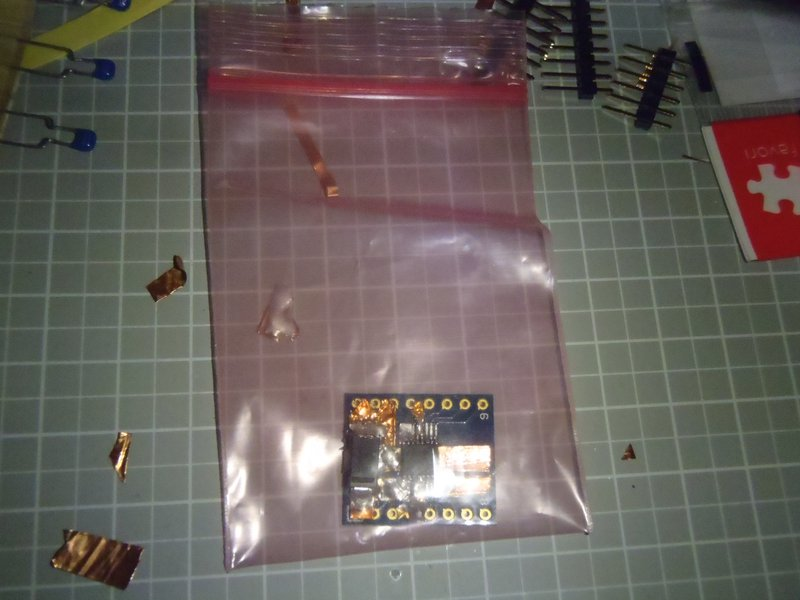
テスターでの検査が終わったら、変換基板は静電防止袋に入れて保管しましょう。
代用フロンなどの基板用洗浄剤を持ってる方は、ここで一度変換基板のフラックスを洗浄したほうがいいかもしれません。
次に、本体基板を組み立てます。
最初に、変換基板に「足」を付けます。この変換基板は穴径が小さいので通常のピンヘッダだと通らないかも知れない
…その場合は、メッキ線（0.5Φ以下？）で足を作ってハンダ付けして下さい。
又、この変換基板は両面スルーホールなので、十分にハンダが浸透するように気をつけて下さい。
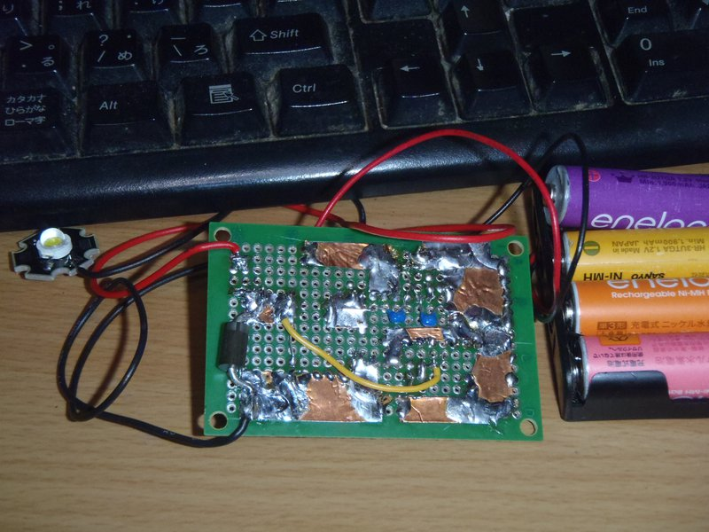
次に、裏面に銅箔でパターンを構築します。（写真は完成後のものです…済まぬ）
銅箔間の接続は、必ずハンダ付けで行うこと。
変換基板→その他部品の順で、背の小さい順番にハンダ付けします（結構重要）
ハンダ付けした部品間を銅箔やメッキ線で配線します。
変換基板のPGNDについては、万能基板裏側に構築したベタアースとメッキ線で接続・ハンダ付けしましょう。
とまれ、電気的熱的に十分結合してることが重要です。
…
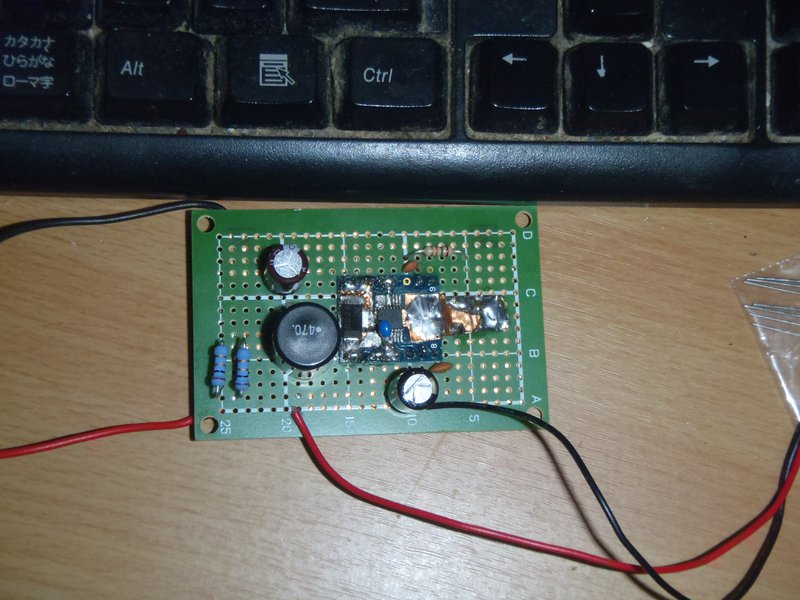
何とか完成しました。が、(配線チェックした後の最初の通電で）最初からLED繋ぐのではなく、
5Ω5W程度のセメント抵抗をダミー負荷にして電流電圧などを測ります。
もし、オシロスコープなどの測定器がある方は、この段階でノイズやリップルなどを見て、回路定数やパターンを調整しましょう。
ここまでうまく行ったら、1WのLEDをつなぎます。
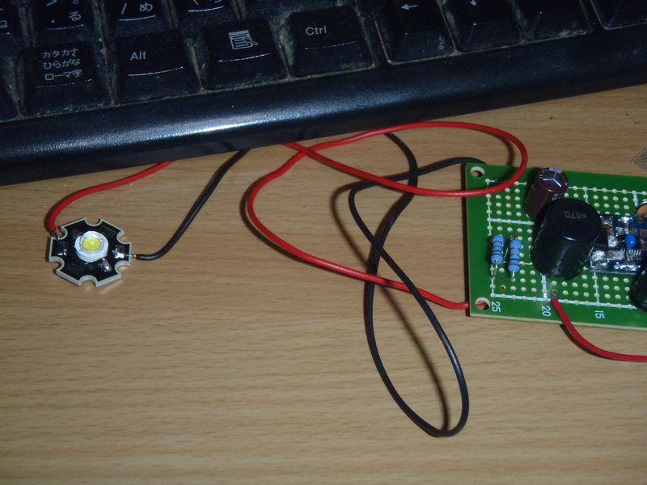
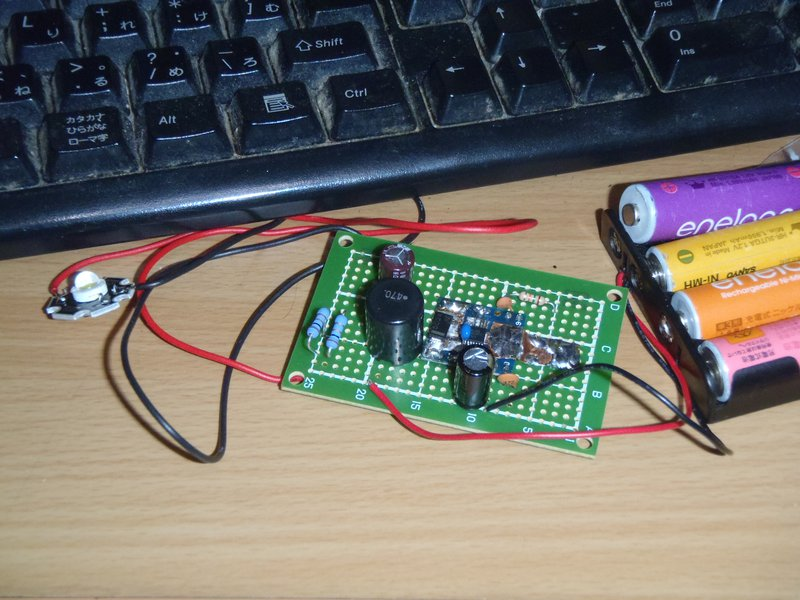
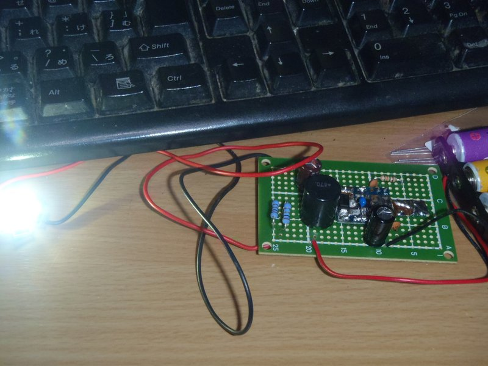
完成です＼(^o^)／
以下、製作中の図やら何やら乗っける予定（は未定）
効率を測ってみた(11/28)
と云う事で、効率ですが
・インバータICの効率
・システム全体の効率
の二つがあります。
まず、インバータIC(てか電源供給部)の効率を測ってみましょう。
効率（η’）＝（D2の両端の電圧×D3に流れ込む電流) /
(B1の両端の電圧×S1の間の電流)
で近似します。
VD2 = 3.37V
ID3 = 0.265A
POUT = 0.893W
VB1 = 5.74V
IS1 = 0.161A
PIN = 0.924W
η’ = 96.65%
但し、R2は再調整で除去
本当に、97%近くまで行っています！！これはスイッチング式の電源回路としてはかなりすごい！！
今度は、システム全体の効率
η ＝ （D3の両端の電圧×D3に流れ込む電流) /
(B1の両端の電圧×S1の間の電流)
で近似します。
VD3 = 3.11V
η = 88.9%
電流制限抵抗（R3 : 1Ω）があるので、この程度のロスが出ますが、しかし89%…
この測定をしてる時に気が付きましたが、LED(D3)の放熱を十分にしない状態で放置すると、ID3が10秒あたり0.001A程度上昇します。
このLED、温度特性が正なので、放熱なしで時間が経つと電流が上昇しすぎて暴走、LEDが焼き切れる危険があります。
実際に使う場合は、十分に大きなアルミ製のシャーシかアルミ板にネジ穴を開けて組み付け
（秋月で売られてるアルミ基板付きLEDは、3Φのナベネジの頭や小スプリングワッシャを
載せてもギリギリショートしないようにできています。流石照明部品メーカのアイテム。）、
その上でシャーシと放熱基板のアルミ面を密着させます。
レイアウトが確定してる場合は、ＰＣ部品屋で百円くらいで売ってるシリコングリスを塗ってもいいでしょう。
但し、1WのLEDだとグリスなしでも殆ど温度が上がりません（3Wならもっと上がるでしょうから真面目に放熱や熱対策を考えないと厳しいかも）
本ドキュメント・及びノウハウは CC BY SA v3.0で公開します。
CC BY SA v3.0で公開します。
実装技術等の特許登録はこれを禁じます。(DO NOT PATENT THIS TECHNIQUES)
後日問題が出た場合は変更の可能性あり。
LED-INVERTER by http://sky.geocities.jp/artanejp/ELECTRONICS/
is licensed under a Creative Commons
Attribution-ShareAlike 3.0 Unported License.
電子工作系もくじへ
全体目次へ
Last Update: 28 Nov.2011 by Artane. ( whatisthis.sowhat _a_t gmail.com )